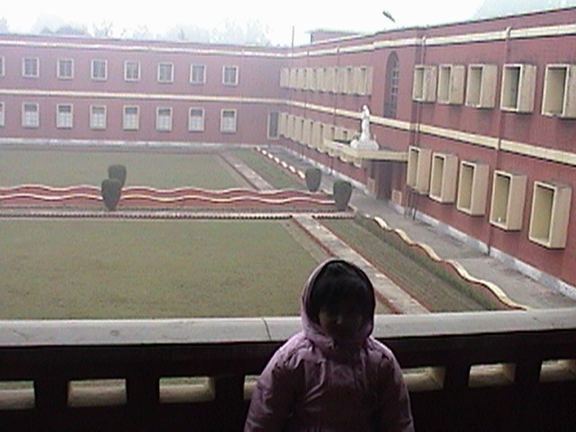
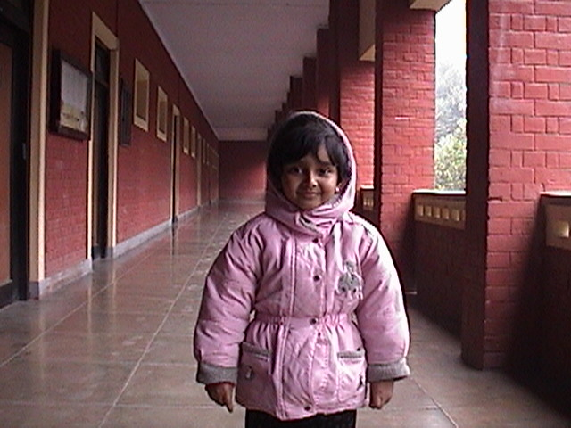
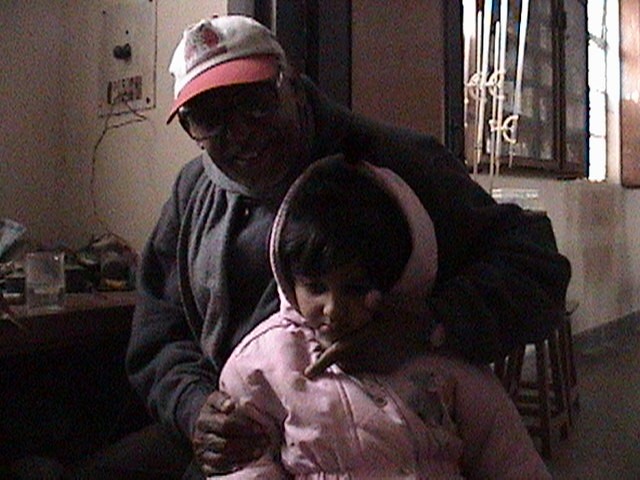
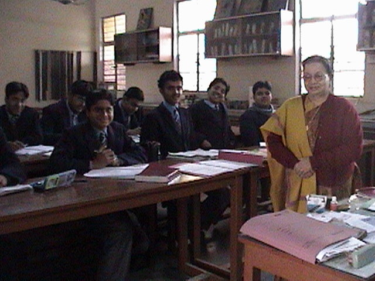

I made a pilgrimage to my alma mater in January 2003. This visit was of special significance in more than one way. The foremost was that I was able to visit St. Mary's with my daughter. I had made several visits to school since I graduated in 1988, but this was very different. Here I was, showing my own child around the grounds that hold so many cherished memories of my own childhood.
I also realized that I had been naive all along in believing that the school would not have changed since I left. However, it had, and so had the people that made it. I met Mrs. Bhatnagar, our beloved biology teacher — the same mother figure that she had been when we were there. I met Mrs. Rachna Trivedi, who too is one of those wonderful persons whose presence around you is a blessing. She never taught me directly, but she is one of those persons who could hardly have not touched the heart of a school boy she came across. I can think of many other people who touched my life, but who have sadly enough passed on. The name that comes up most in my mind is that of Mrs. Sada, whose biggest gift to us was the appreciation of history and literature.
The physical changes in the school were a shock, too, but then they just show how much our beloved school has grown in the last fifteen years — a new staff room and library behind the auditorium, a primary section where the junior playground used to be, a state-of-the-art computer lab, a far cry from our BBC Micros and Sujata dot-matrix printers, not to mention the SSSD five-and-quarter floppies. Even the quadrangle where we assembled for our morning prayers has changed its orientation. It was too foggy to see across the playing fields to see if our celebrated "African Jungle" is still there.

Mrs. Bhatnagar took me over to meet the principal, Reverend Brother Paul. Sitting in one of the chairs in the Principal's Office, I was reminded of an incident from 1988. I believe we were testing the boundaries at the time where equality with grown-ups was concerned, and I sat without invitation in this same office. Our principal at the time, our beloved Brother Aloysius — who usually did not object to us sitting next to him at sporting events — objected. "Get up, my son. You can't sit there," said Aloo, as we called him. "Why?" I retorted. "We sit with you all the time at the games." Looking back, I feel ashamed of my impudence. He smiled, as he always did, and said, "You can sit there when you come to see me with your chhotu, son."
I did not think about that until I was back in the principal's office. He was right after all. The first time I got to sit in that same chair was with my chhotu. While I am disappointed that Brother Aloysius is no longer with us so that I could share this thought with him, I am sure he was looking down at us and that he will bless her the way he blessed us all with his presence in our lives at one time.

All said and done, I returned with copies of the Marian Lookout's special Golden Jubilee edition — incidentally, our school celebrated its Silver Jubilee when we were in the first grade in 1977 — key rings and commemorative school caps for Krishnan, Lakshmi and myself. I also picked up house T-shirts for each of us from the official school tailor in Sadar Bazaar, with the hope that we can wear those the next time we are together. Mrs. Trivedi was kind enough to provide me phone numbers for my first teacher, Mrs. Ahuja, now retired and living in Gurgaon, and our fifth grade teacher, then Miss Kushwaha and now Mrs. Sinha, who now lives in New Delhi. I talked to Mrs. Ahuja on the telephone but could not reach Mrs. Sinha — something I will leave for my next visit.
